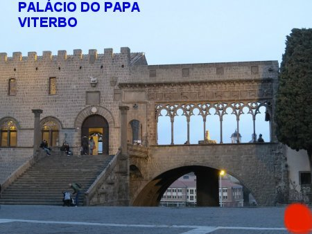
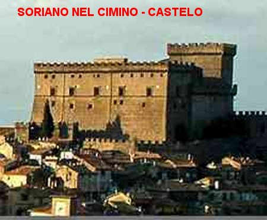

“COM INSPIRAÇÃO DIVINA”
VISITA INESQUECÍVEL DA MÃE DE
DEUS
Rosa, por sua grande atividade e provavelmente, pela pouca preocupação com a própria saúde, sendo apenas uma menina com 14 anos de idade, em 23 de Julho de 1247, pegou uma forte gripe, talvez, até um princípio de pneumonia. Tinha constantemente febre alta que a deixava prostrada na cama. Os pais e os parentes preocupados fizeram todas as tentativas possíveis e imagináveis, usadas naquela época, sem qualquer resultado animador. Por causa da doença, tornou-se uma menina pálida, vivendo em cima de um colchão de palha, que despertava a compaixão de todos, mas ninguém conseguia baixar a sua febre e lhe infundir disposição. Ela nunca se queixava... Mantinha-se na cama em silêncio, aceitando tudo o que lhe traziam para comer, e até mesmo os remédios amargos, que se imaginava, poder arrancá-la daquele estado de prostração. Mesmo quando era acometida por uma crise de tosse, olhava para o crucifixo na parede do seu quarto e murmurava carinhosamente: “Obrigado, meu SENHOR". Como um pequeno cordeiro, deixava-se imolar, sempre se lembrando das terríveis e abomináveis dores sofridas por JESUS no passado, e que ainda sofre no presente, com as maldades e covardias dos inimigos da Igreja. Ela se consolava na certeza de que o seu silêncio representava para o SENHOR DEUS, um testemunho sincero de seu amor dedicado. E procedia assim, para que as suas dores tivessem algum valor, que ao menos elas servissem para consolar JESUS. Em sua generosidade, ela julgava muito pouco e insuficientes os sofrimentos que padecia, e como estava impedida de realizar mais penitências em seu quarto, para consolar NOSSO SENHOR, ela humildemente rogava: “Querido SENHOR, me dê forças para sofrer por VÓS, ou então, querido DEUS, levai-me para o VOSSO lado”.
Na verdade, NOSSO SENHOR não a chamou para o Céu, mas para cumprir uma missão importante, de combater aquele terrível Imperador apóstata, que da mesma maneira como os antigos Césares Romanos, estava querendo ser o absoluto dono do mundo.
Os dias passaram e ela melhorou, mas continuava de cama. Numa determinada oportunidade, com diversos vizinhos e conhecidos em seu quarto, ela mantinha os olhos cerrados, concentrando sua atenção aos seus pensamentos e aos fatos que invisivelmente aos outros, se desenrolavam no seu quarto. De repente esboçou certo sorriso! Abriu os olhos e ficou de pé, olhando para o Céu. Todos observaram que ela conversava com “pessoas” invisíveis... Em determinado momento, ela assumindo uma atitude de comando, disse com energia: “Todos se ponham de joelhos! Está chegando a Rainha rodeada de Anjos e Santos! Saudai-a!” As pessoas presentes se ajoelharam rapidamente e permaneceram em silêncio, observando todos os movimentos de Rosa. E assim, a Menina começou a repetir todas as palavras que a SANTÍSSIMA VIRGEM MARIA lhe dizia: “Minha filha, deves vestir o hábito de penitência e pregar contra os inimigos da Fé! Não temas! Serão benditos, nesta vida e na outra, todos aqueles que te escutarem, e os que fecharem os ouvidos serão castigados!” NOSSA SENHORA a instruiu adotar o hábito da Ordem Terceira de São Francisco (hoje denominada ORDEM FRANCISCANA SECULAR), e a pregar penitência em Viterbo.
A MÃE DE DEUS confirmava desse modo, todas graças e predileções que Rosa havia alcançado do SENHOR, desde tenra idade, e que agora lhe ordenava uma importante missão: “Ser fiel com decisão, combatendo com firmeza a ganância e a abominável insubmissão que invade muitas consciências”.
CUMPRINDO A MISSÃO DIVINA
Ela deixou a cama, pois estava perfeitamente curada, e tratou de se preparar para iniciar a sagrada missão que NOSSA MÃE SANTÍSSIMA lhe confiou: cortou os cabelos, fez uma grosseira e cumprida túnica para a sua penitência e foi para a Igreja de São João Batista, pois era o dia 24 de Junho, data em que se comemora o nascimento do “precursor” de JESUS. Nessa oportunidade Rosa foi admitida na Ordem Terceira Franciscana e adotou o hábito religioso, uma simples túnica com um cordão na cintura. A cerimônia simples foi acompanhada por diversas pessoas que souberam da sua cura milagrosa, assim como da visita de NOSSA SENHORA, e então queriam contemplar a sua santidade.
A partir de então, Rosa vestida com aquela túnica e um crucifixo nas mãos, passou a fazer pregações nos bairros, nos jardins, em ruas movimentadas, falando sobre a admirável Obra de JESUS, a vida e SUA terrível morte na Cruz para consolar o PAI ETERNO e salvar a humanidade de todas as gerações. E afirmava com coragem e certeza: “Por isso, primordialmente, todos sem exceções devem procurar jamais ofendê-LO e sim divulgarem a suprema bondade de NOSSO SENHOR”. Ela insistia também na necessidade das pessoas trilharem o caminho do bem e de procurarem ser generosas com as necessidades do próximo, ajudando-se mutuamente, porque esta também é a Vontade do CRIADOR. E muita gente ouvia suas palavras e acreditavam nas verdades que o ESPÍRITO SANTO lhe impulsionava a dizer.
A multidão que ouvia Rosa crescia em cada dia. Então, aconteceu muitas vezes, que pelo fato dela ser uma jovem de baixa estatura, tinha que subir num tamborete de madeira ou numa pedra de bom tamanho, para que todos a vissem e pudessem compreender em plenitude o teor das suas palavras e dos seus ensinamentos.
A pequena Rosa percorrendo as ruas de Viterbo sempre com um Crucifixo na mão exclamava: “Irmãos, façamos penitência e apaziguemos a cólera de DEUS, buscando evitar os grandes males que poderão advir”. Rosa tinha adquirido sabedoria apenas na meditação do Crucificado. Tinha tais arroubos de eloquência e citava tão a propósito as Sagradas Escrituras, que atraia multidões e causava admiração até aos mais letrados. E DEUS, misericórdia infinita, para o bom êxito de suas pregações, multiplicava os prodígios através daquela pequena missionária, mostrando ao povo a aprovação Divina daquela Missão. Numa ocasião em que a multidão era tão grande que não podia ver a “apóstola”, apesar de ter subido numa pedra, Rosa começou a se levitar, elevando-se a cerca de 60 centímetros de altura até poder ser vista por todos. A notícia deste acontecimento, a levitação de Rosa, atestada por milhares de testemunhas, percorreu a Itália.
Arrojada e corajosa, Rosa sempre ficava inflamada e seus argumentos brotavam como planta boa em terreno bem adubado. Frequentemente travava discussões acirradas com “gibelinos” que queriam menosprezar os seus argumentos, inclusive proferindo injúrias contra o Papa e contra a Igreja. Ela não perdoava, com palavras fortes e irrefutáveis, caia matando com argumentos firmes e irrefutáveis, encima dos adversários que queriam injuriar e ofender o bem realizado pela Igreja e pelo Papa, assim como criticar aqueles que tentavam realizar alguma boa obra em agradecimento a bondade do SENHOR DEUS.

AGRESSÃO COVARDE
Certo dia em que fazia uma amorosa explicação sobre a SANTÍSSIMA VIRGEM MARIA, testemunhando que ELA sempre atende a todos os seus filhos que buscam a sua preciosa e tão querida proteção, um “gibelino” raivoso, após insultá-la grosseiramente, golpeou-a com um soco nas costas. Ela, porém, não se exaltou, serenamente apenas disse as palavras: “Infeliz... Em três dias você será golpeado também”. E de fato aconteceu: em três dias aquele “gibelino” apareceu coberto de lepra, tornando-se objeto de horror para todas as pessoas.
Pelos fatos descritos, é fácil compreender que a presença daquela jovem corajosa e impulsiva deixava preocupados os inimigos da Fé, que apesar das suas manobras ilícitas e condenáveis, o povo conscientemente se convertia e se tornavam decididos defensores do Papa e da Igreja. A coragem de Rosa, tão nova e tão frágil, sustentou a sua fidelidade cristã pura e cristalina, tornando-se um singular flagelo dos hereges cátaros e a total ruína dos “gibelinos”.
ANÚNCIO DA MORTE DE FREDERICO
A pregação de Rosa transformou Viterbo. Muitos pecadores empedernidos se converteram. Hereges voltaram ao seio da igreja e, principalmente, os partidários italianos do Imperador Frederico II, reconciliaram-se com o soberano Pontífice, Papa Inocêncio IV.
E seguindo sempre o caminho iluminado pelo DIVINO ESPÍRITO SANTO, na noite do dia 4 para o dia 5 de Dezembro, Rosa recebeu a visita de um Anjo que lhe anunciou a morte do Imperador Frederico II, em Roma. Chegou o momento de anunciar corajosamente ao povo, a próxima morte do abominável Imperador Frederico II. Falou Rosa: “Escutai bem! Dentro de poucos dias exultareis de alegria, pois obtereis uma grande vitória! Nesta noite, um Anjo do SENHOR me anunciou a próxima morte do perverso Imperador Germânico!”
ELA E SUA FAMÍLIA FORAM EXILADOS

No entardecer daquele mesmo dia, Rosa e seus pais: João e Catarina, arrumaram as poucas coisas que tinham, colocaram em cima de dois animais que possuíam, e durante a noite deixaram Viterbo em pleno inverno, e se refugiaram no lugarejo denominado Soriano nel Cimino, que era administrado pelos “guelfos”, defensores do Sumo Pontífice, que na época era o Papa Inocêncio IV.
Pouco tempo depois foi anunciada publicamente a morte do Imperador Alemão Frederico II, ocorrida no dia 13 de Dezembro de 1250. Então, aquela previsão feita por Rosa se concretizava de maneira irreversível. O povo que já a admirava, passou a considerá-la uma verdadeira Santa. Assim, depois de 18 meses de desterro, Rosa e seus pais voltaram para a casinha de Viterbo, sua terra natal, onde foram recebidos com muita alegria pelos amigos, conhecidos e por aqueles que admiravam o fervor da oratória da jovem Rosa. E logo ao chegar, com as primeiras notícias dos amigos, pode contemplar com alegria e satisfação, os frutos do seu apostolado: o Papa Inocêncio IV recuperou todas as cidades pontifícias, que tinham sido invadidas e ocupadas por Frederico II, assim como libertou Roma. E ele próprio, o Sumo Pontífice, acompanhado de grande comitiva foi a Viterbo, onde mandou destruir aquela terrível fortaleza “gibelina”, construída na entrada da cidade, pelo povo e nobres prisioneiros dos administradores de Frederico II.